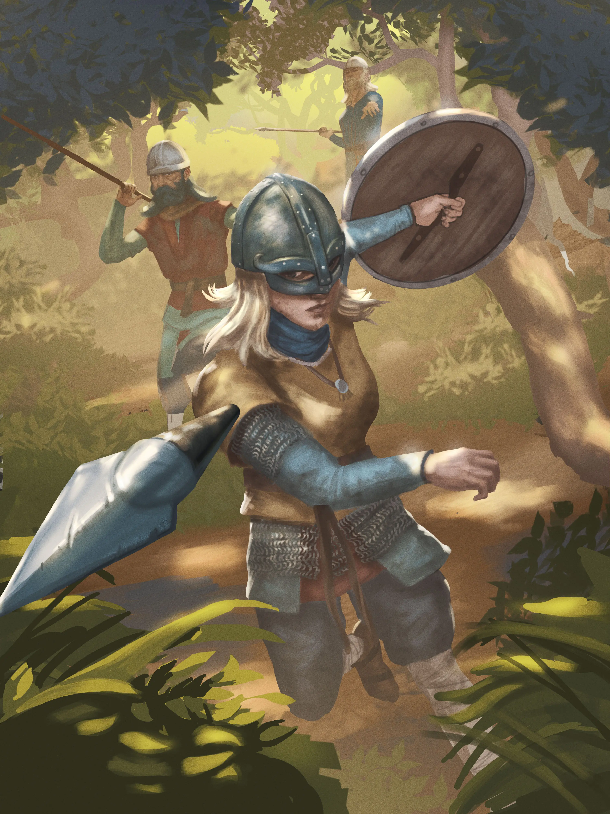
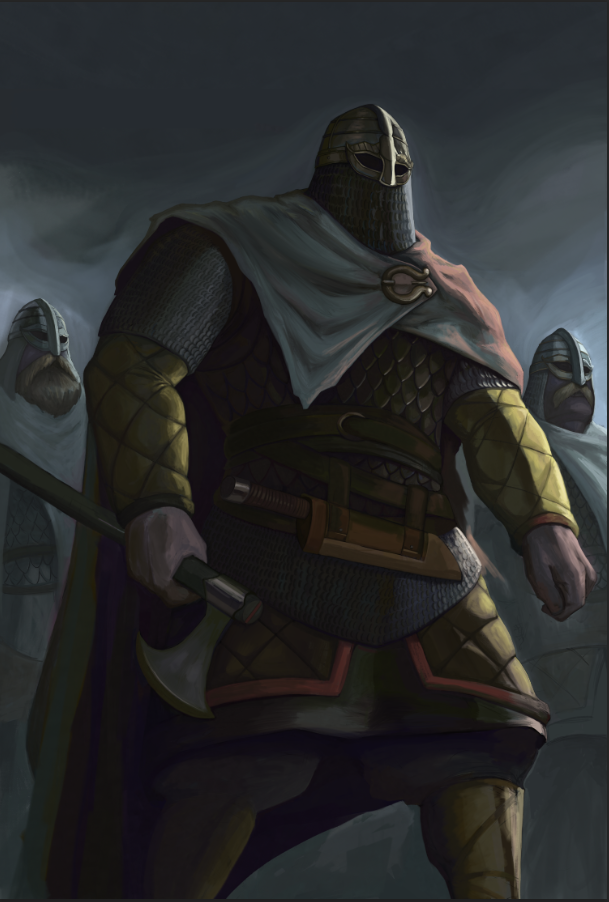
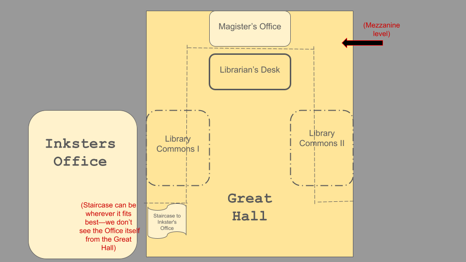

Tectonicus
"Tectonicus" is a historical card-based auto-battler game, where you can experience & play a strategy game steeped in history & mythology.
The aim of the game is to engage people in history and reflect on the past & their life.
It's inspired by and designed to be a "Hearthstone" meets "Age of Empires", "Civilizations" & "Faeria".
I joined this team to assist them in developing the game's single player "Story Mode" where my core focus was on the navigation & interaction in "Story Mode".
This game is currently in development.
Engine: Unity 2022.3
Genre: Card Auto-Battler, Strategy
Team Size: 15+
Role: System Design & QA
Platform: PC

RESPONSIBILITIES
System Design
- Ownership of the single player's "Story Mode" navigation
- Collaborated with programmers to prototype the navigation system
- Researched different methods on how interaction in "Story Mode" should function
Quality Assurance
- Responsible for campaign and core gameplay testing
- Detailed reproduction steps, context and technical specifications

System Design
Ownership of navigation
Learning new tools
Taking Pictures - Displaying to a Material

The Brief
Since I was assigned the responsibility to research & develop the "Story Mode" navigation system, I used the mockup for the environment created by the Game Designer lead as a starting point.